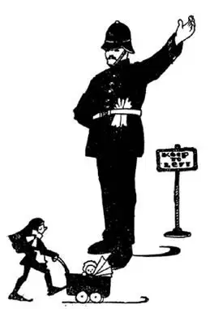
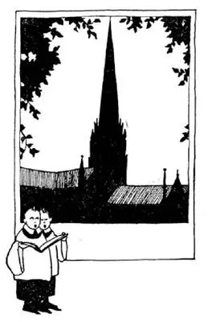

26
The Land of the Angles (continued
)
盎格鲁人的土地（续）

I ONCE asked an Englishman if he lived in London.
“Why does every American think that every Englishman lives in London?” he replied—and he sounded rather vexed. “There are other places in England besides London.
There is Chester and Manchester,
There is Norwich and Harwich ,
There is Oxford and Guildford ,
There is Birm ingham and Nottingham ,
There is Cambridge and Tunbridge ,
There is Northampton and Southampton ,
There is Plymouth and Yarmouth and Weymouth …”
And as he gasped for breath I cried, “Please don’t tell me all the ’wiches and ’fords and’mouths in England.”
“Well,” said he, “there are over thirty million people in England who don’t live in London and I am one of them.”
But nearly every Englishman, no matter where he does live, goes to London some time in his life. You can get to London in a day from any place in England, for the island is so small and trains are so fast.

You would be arrested if you drove
on the right side of the road
如果你靠马路右侧开车，就会被警察抓起来
Railroads were invented by an Englishman, and some of the fastest trains i. t. w. W. run in England. Their trains look different from ours. They seem much smaller and lighter and the cars are divided into rooms instead of being one long room like ours. Each room has half the seats facing forward and half facing backward, so that half of the people have to ride backward. Some of these rooms are labeled “lst class,” but most are “3rd class.” People pay more to ride in a lst class room than they do in a 3rd class room. The 1st class has cushioned seats and there is more space for each person. The 3rd class has wooden seats without cushions, and more people are put in a room. The English railroad trains run on the left hand side of the road. Most Americans are right-handed, and we say “Keep to the Right,” but most Englishmen are right-handed too, yet they say “Keep to the Left.” You would be arrested in England if you drove or rode on the right hand side as we do here.
Our country roads usually have fences alongside, but in England the country roads usually have hedges. Sometimes the hedges are like those that grew up round Sleeping Beauty’s castle, so thick and so high that you cannot see through them or over them, and the houses behind them are hidden, all except perhaps the roof. Sometimes the roofs are quite different from ours—made of piles of straw, which are called “thatch.” You would hardly think thatch roofs would keep the rain out, but they do; and you would think they would burn up easily, but they don’t. The houses themselves are seldom built of wood, because there is very little wood in England to build them of. Almost all of them are built of stone which comes out of the ground, or brick made out of the ground. In America there is a great deal of wood, but in England there is little wood, for there are very few forests, hardly any big ones, and they are usually kept like a park. The country is so old the trees have nearly all been cut down. The trees that are left are so valuable that people do not often cut them down to use them for building houses. In America a wood house is cheaper than a stone or brick house. In England a stone or brick house is cheaper than one made of wood.
Among the sights which people go to see in England are the churches and cathedrals. Few churches in America are a hundred years old. There are few churches in England that are not a hundred years old, and many of the cathedrals are more nearly a thousand years old. Most of the people in England are Episcopa-lians, so most of the churches in England are Episcopal. In fact, the Episcopal Church is called the Church of England.
Two of the greatest universities in the world are in England. They play each other football, but not baseball. Instead of baseball they play a game called cricket, and they have rowing matches. One of these universities is on River Thames where oxen used to wade across or “ford” the river, and so is called Ox-ford; the other university is by the River Cam where a bridge crosses, so this is called Cam-bridge.
Many of the World’s greatest writers whose stories you read and whose poetry you have learned lived in England, and the greatest English writer i. t. w. W. , William Shakspere, lived there at a place called Stratford-on- Avon.
But the chief business of England is “making things”—as the chief business of New England in America is “making things.” In New England there is neither coal nor iron to make the things with; both have to be brought from somewhere else; but in Old England there is a great deal of both coal and iron. Coal makes the fire to run the machinery and iron makes the things; so in England they make everything that can be made of iron, from huge engines to small penknives. At Sheffield they make a great quantity of table knives and silver-plated ware called “Sheffield.” Look at your own table knives and silver-plated ware and see if any of them have the label “Made in Sheffield” stamped on them.

索尔兹伯里大教堂
It’s the loveliest spire in England
它是英格兰最美丽的尖顶
In England they also make a great deal of cloth—cloth made of wool from the backs of sheep that are raised in England, and cloth made from cotton which is not grown in England but brought there all the way from the United States.
There are farms in England too, but not enough is raised on the farms to feed the English people one day a week. Most of the food has to be brought to them from other countries across the sea. The English eat a great deal of mutton and roast beef. “The Roast Beef of Old England” has been celebrated in song and story. One story is that a certain King of England thought steak from the loin of the beef was so good that he called it “Sir Loin,” as he would a knight or a lord, and that’s why we still call it sirloin steak to-day. It’s a good story but I’m afraid it isn’t a true story.
The King of England is king of many more people than just those who live in Great Britain. Englishmen explored and conquered and settled in far-off places all over the World in times gone by. England owned countries in every continent and at first the laws for all these countries were made in London. Now, however, many of these countries that belonged to England govern themselves and make their own laws. They have become independent countries but they have kept the King of England as their king. This big family of countries all over the World with the same king, the king of England, is called the British Commonwealth of Nations. The country of Canada, that I told you about earlier, is a member of the British Commonwealth of Nations.
【中文阅读】
我曾经问过一个英国人是不是住在伦敦。
“为什么每个美国人都认为所有英国人都住在伦敦呢？”他却这样回答——语气有点生气，“除了伦敦，英国还有很多其他地方啊。
有切斯特和曼彻斯特，
有牛津和吉尔福德，
有伯明翰和诺丁汉，
有剑桥和坦布里奇，
有北安普顿和南安普顿，
有普利茅斯、雅茅斯和韦茅斯……”
他停下喘气的时候，我大叫：“请不要把英国所有那些‘里奇’、‘福德’和‘茅斯’都说出来了！”
“好吧，”他说，“英国有三千多万人都不住在伦敦，我就是其中之一。”
但是几乎每个英国人，不管他住在哪里，一生中总会到伦敦去住一段时间。无论从英国哪个地方出发，都可以在一天之内到达伦敦，因为整个岛屿很小，而火车速度又很快。
铁路是英国人发明的，世界上一些跑得最快的火车也在英国。他们的火车看起来和我们的不一样，似乎更小、更轻，他们的车厢被分成一个个隔间，而不像我们的车厢那样，没有任何隔断。每个隔间里设有面对面的座位，因此一半乘客是倒着前进的。有些隔间标着“头等”，但大多数是“三等”。头等车厢隔间的车票要比三等车厢隔间的贵。头等车厢隔间的座位上铺有软垫，每个人的空间也更大些。三等车厢隔间只有木制的座位，没有软垫，每个隔间里的乘客也更多些。英国的火车是靠铁路的左边行驶的。大部分美国人是惯用右手的，我们说“请靠右行”，但大部分英国人也是惯用右手的，可他们却说“请靠左行”。在英国，如果你像在美国一样靠右开车或骑车，就会被警察抓起来。
我们的乡村公路两旁通常设有栅栏，但在英国，乡村公路两旁通常是树篱。有些树篱就像《睡美人》里城堡外的树篱，长得又密又高，无法透过树篱看到后面的东西，也无法从上面望过去，后面的房子整个都被遮掩了，也许最多只能看到屋顶。有时屋顶也和我们的大不相同——是用禾秆摞起来的，叫做“茅草屋顶”。你很难想象茅草屋顶能防雨，但确实可以；你可能以为茅草屋顶很容易烧起来，但是并不会。这些房子本身很少是用木头造的，因为英国木材稀少，不够用来建房子。几乎所有的房屋都是用地下的石头建的，或者是用土做成的砖头建成的。美国有大量的木材，但英国的木材很少，因为英国只有很少的森林，几乎没有大森林，那些小森林通常像公园一样被保留下来。这个国家历史悠久，树木几乎都被砍掉了。剩下的树木于是变得非常宝贵，人们一般不舍得 把树木砍倒用于盖房子。在美国，木头房子比石头或者砖头房子便宜。在英国，石头或者砖头房子比木头房子更便宜。
英国有很多值得一看的名胜风景，包括很多教堂和大教堂。美国很少有一百年历史的教堂。但英国几乎没有教堂是不超过一百年的，许多大教堂有一千多年的历史。大部分英国人都是圣公会教徒，所以英国大部分教堂都是圣公会教堂。实际上，英国圣公会被称作英国国教会。
世界上最著名的大学中有两所在英国。这两所大学之间常举行足球赛、板球赛和划船比赛，但没有棒球赛。其中一所大学位于泰晤士河河畔，那里过去是牛群涉水过河的地方，因此就叫“牛津大学”；另一所大学位于剑河河畔，剑河上有一座桥，因此就叫“剑桥大学”。
世界上许多最伟大的作家都生活在英国，你读过他们写的故事，学过他们写的诗歌。世界上最伟大的英国作家威廉 · 莎士比亚就曾住在英国埃文河畔的斯特拉特福小镇上。
但英国最主要的行业是“制造东西”——就像美国的新英格兰最主要的行业是“制造东西”一样。新英格兰既没有煤矿也没有铁矿；制造东西所需的煤和铁都必须从其他地方运过来；但是英国，即老英格兰，则有丰富的煤和铁矿资源。煤炭燃烧，可以开动机器，铁可以制成各种东西；因此在英国，人们生产各种各样铁制品，从巨大的发动机到很小的袖珍折刀。在谢菲尔德，人们生产大量的餐刀和镀银器皿，叫做“谢菲尔德银具”。看看你家里的餐刀和镀银器皿，看上面是否印有“谢菲尔德制造”的标记。
英国还生产大量布料——用英国产的羊毛做成的布，和用棉花做成的布，但棉花却不是英国产的，而是从美国一路运到英国来的。
英国也有农场，但农场种出的粮食还不够英国人一个星期里吃一天的。大部分粮食必须从大洋对岸的其他国家运来。英国人吃很多羊肉和烤牛肉。很多歌曲和故事都赞美过“老英格兰的烤牛肉”。有个故事说英国某个国王觉得用牛腰肉烤出的牛排味道最香，他就把牛腰肉称作“牛腰先生”，就像他称呼一位爵士或勋爵一样，所以现在我们仍然把上好的牛腰肉称作“腰肉先生”。 [1] 这个故事很好听，但恐怕不是真实的。
英国国王统治的范围远远超过大不列颠岛。在过去，英国人到世界各地去探险，征服了很多遥远的地方，把它们变成英国殖民地。在每一大洲都有英国 的殖民地，最初所有这些国家的法律都是由在伦敦的英国人制定的。然而现在其中的许多国家自己管理自己，并制定自己的法律。他们已经成为独立的国家，但仍然把英国的国王当做自己的国王。这个遍布世界各地的有着同一个国王，即英国国王的大家族叫做“英联邦”。我前面介绍过加拿大这个国家，就是英联邦的一个成员国。